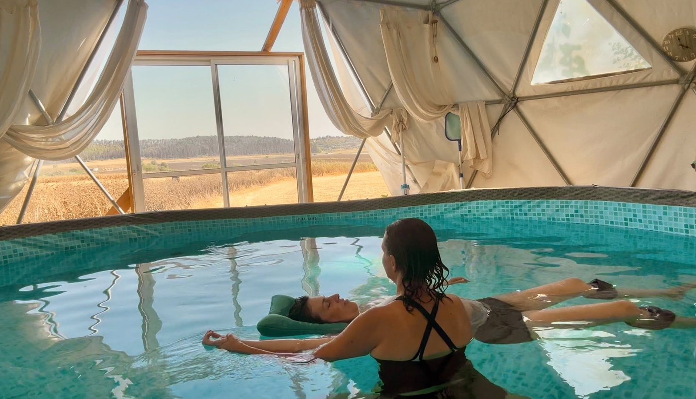
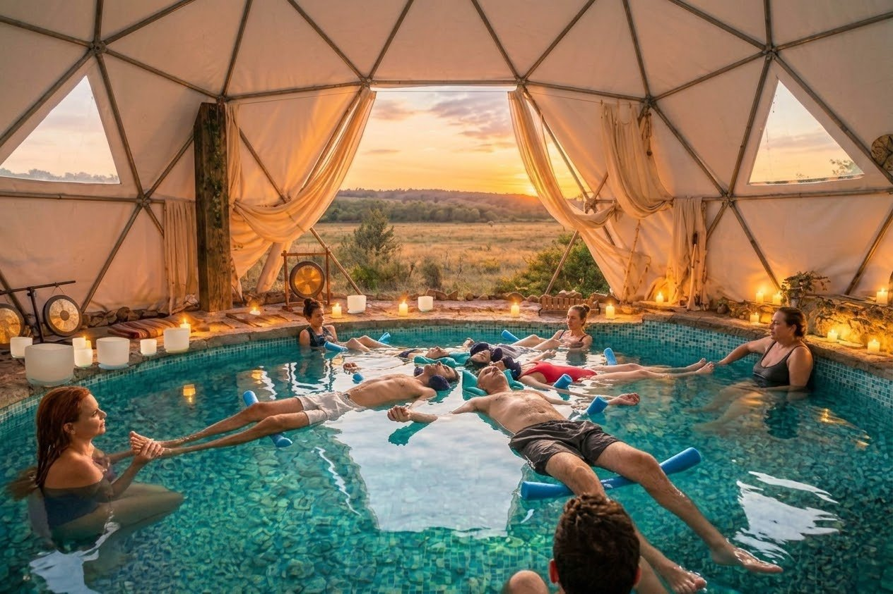
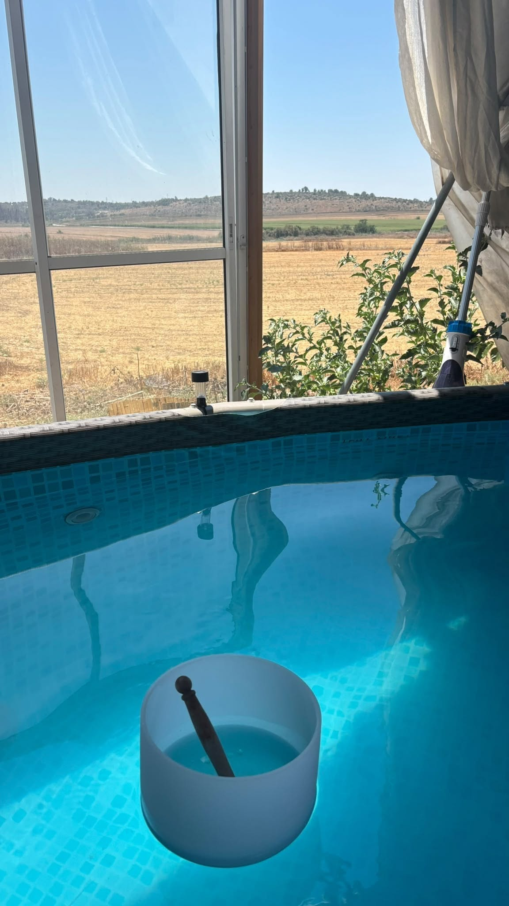
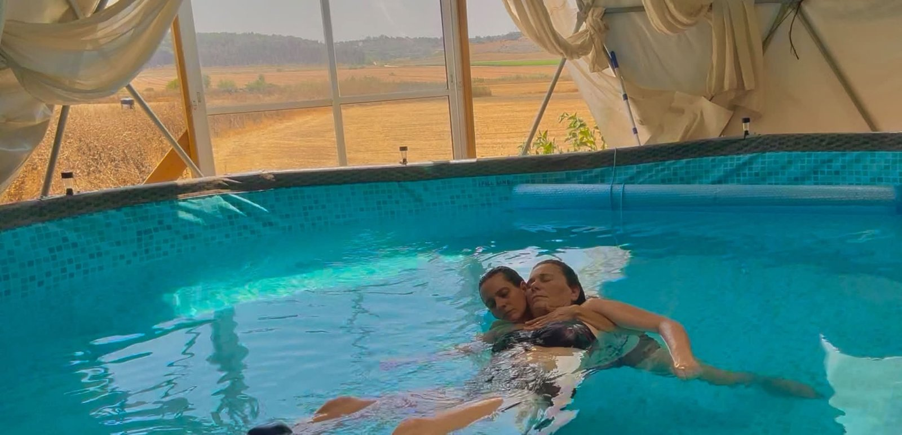
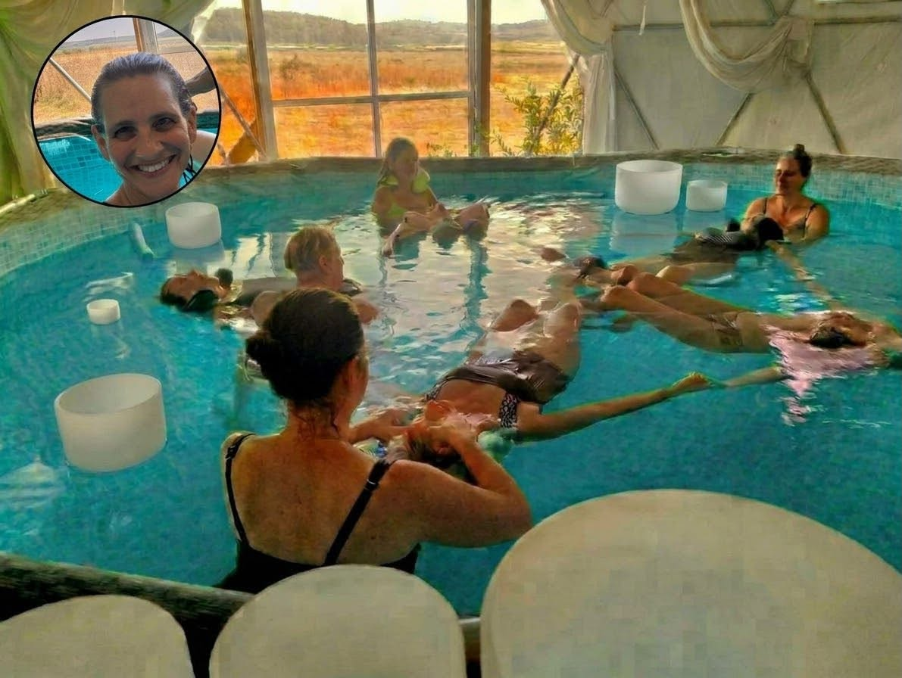
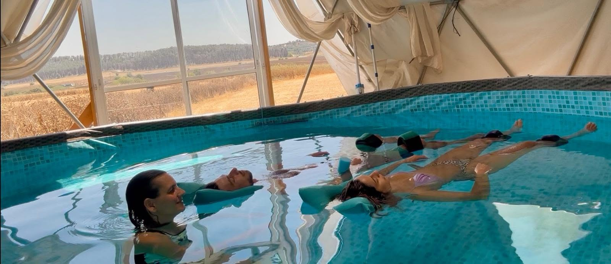
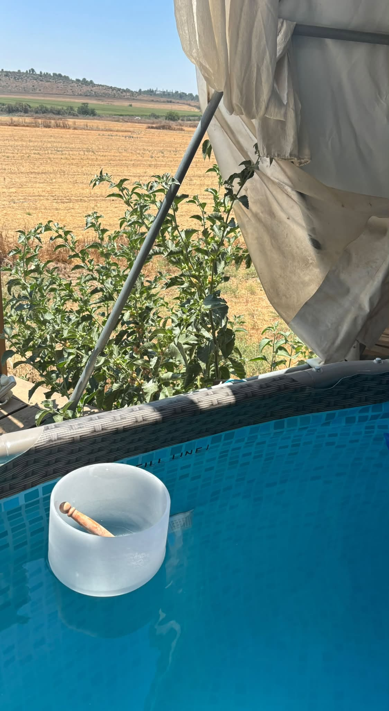
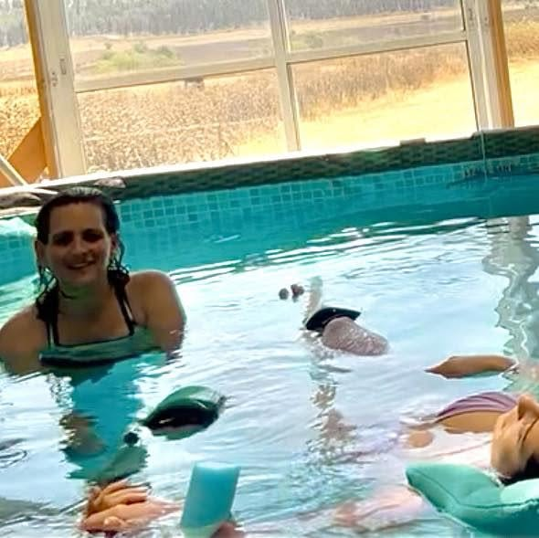
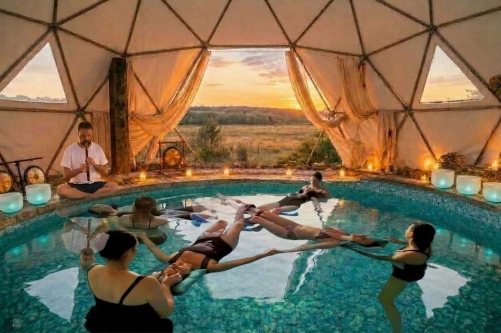

וואטסו וצלילים מרפאים
טיפול אישי במים חמים. הגוף צף ונתמך, נע בתנועות איטיות ורכות, והצלילים ממלאים את החלל. לצד העבודה בגוף משתלבת עבודה רגשית ואנרגטית בשיטת אלכימיה רגשית.
למי זה מתאים: לכל מי שרוצה לעצור, להרפות ולחזור לעצמו.

וואטסו, צלילים מרפאים וטיפול רגשי במים חמים, בכיפה שפתוחה אל השדות של מושב טל שחר.
בתוך כיפה גאודזית עם חלונות גדולים, וילונות לבנים ושדות עד האופק, יש בריכה טיפולית של מים חמים. המים, המגע העדין והצלילים של קערות הקריסטל עוטפים את הגוף ומאפשרים לו להרפות באמת.
בבריכת האלות משלבים וואטסו, טיפולי מים וצלילים מרפאים עם כלים רגשיים ואנרגטיים. הטיפול מרגיע ומשחרר, פותח את הלב, ולא פעם הופך למסע פנימי של ממש.

כל טיפול נבנה סביב המים: ציפה, תנועה רכה ומגע, יחד עם צלילים מרפאים, תדרי קול ושירי ריפוי. אפשר לבוא לבד, בזוג או בקבוצה.

טיפול אישי במים חמים. הגוף צף ונתמך, נע בתנועות איטיות ורכות, והצלילים ממלאים את החלל. לצד העבודה בגוף משתלבת עבודה רגשית ואנרגטית בשיטת אלכימיה רגשית.
למי זה מתאים: לכל מי שרוצה לעצור, להרפות ולחזור לעצמו.

טיפול משותף שיוצר חיבור עמוק בין בני הזוג. הרפיה, מגע ותנועה יחד במים, עם צלילים מרפאים מול הנוף. יוצאים מהבריכה קרובים יותר.
למי זה מתאים: לזוגות שרוצים רגע של שקט ביחד, ליום נישואין או סתם כי מגיע לכם.

ערב קבוצתי של ציפה והרפיה עמוקה: ציפת מנדלות, חילופי טיפולים ומוזיקה מלטפת של סאונד הילינג, לרוב לצבעי השקיעה. התנועה והמגע מאפשרים לצלילים לגעת עמוק ולהרגיע את מערכת העצבים.
מועדים: הערבים הקרובים מתפרסמים בדף הפייסבוק של בריכת האלות.

שירי ריפוי וסאונד הילינג. בואו להירגע!
בבריכה מחוממת בטל שחר, רצות הופעות מיוחדות של שירי ריפוי, תדרי קול וסאונד הילינג.
בואו להרפתקאה תת ימית מיוחדת במינה, בה תצופו במים החמים, תהיו עטופים כברחם אימכם, פתחו את ערוצי הריפוי וקבלו מנה גדושה של רוגע, הנאה ושקט נפשי.
שובר לטיפול וואטסו עם סאונד הילינג, ליחיד או לזוג. מתנה לחג, ליום הולדת או למישהו שצריך רגע לעצמו.
מטפלת, מנחה ויוצרת. מקימת בריכת האלות.
יהל מטפלת בוואטסו כבר 18 שנים. היא מטפלת רגשית ואנרגטית בשיטת "אלכימיה רגשית", מוזיקאית, ומשלבת בטיפולים תדרי קול, שירי ריפוי וצלילים מרפאים. לצד הטיפולים האישיים היא מנחה סדנאות, ריטריטים ומעגלי הקשבה.
אמא לשלושה, גרה במושב טל שחר, ושם הקימה את הבריכה.
כמה רגעים מהמים, מתוך דף הפייסבוק.




וואטסו הוא טיפול במים חמים: המטופל צף על המים, נתמך בידיים של המטפלת ונע איתה בתנועות איטיות ורכות. בבריכת האלות הוואטסו משתלב עם צלילים מרפאים ועבודה רגשית.
סאונד הילינג הוא מפגש של צלילים מרפאים ותדרי קול: קערות קריסטל, כלים וקול. כשהגוף צף במים חמים, הצלילים נשמעים ומורגשים גם מבפנים, וקל יותר להרפות.
הופעה של שירי ריפוי, שירי מנטרות, תדרי קול וסאונד הילינג, בזמן שהקהל צף במים החמים של הבריכה. את שירי הריפוי יהל כותבת ומלחינה בעצמה.
כן. בטיפול זוגי במים בני הזוג צפים יחד, עם מגע, תנועה וצלילים מרפאים, מול הנוף הפתוח. מתאים גם כמתנה ליום נישואין.
בריכת האלות נמצאת במושב טל שחר, ליד גדרה ולטרון, בתוך כיפה גאודזית מול השדות. המים בבריכה מחוממים כל השנה. הכתובת המדויקת נשלחת עם תיאום הטיפול.
בוחרים טיפול, יום ושעה ושולחים בקשה. יהל חוזרת אלייך לאישור.
טוען…
לתיאום טיפול, הרשמה לערבים ושוברי מתנה, דברו עם יהל בטלפון או בוואטסאפ.
לערבי "צלילים במים" אפשר לפנות גם לארז בן שמחון: 052-629-9677, ולעדכונים על סדנאות וריטריטים בקישורים של ארז.